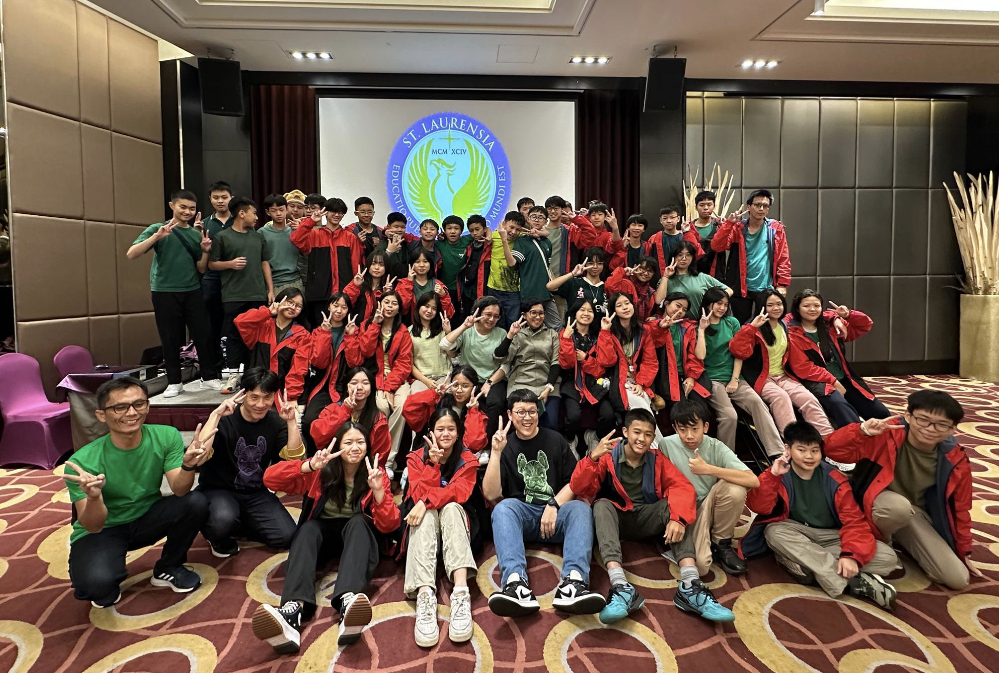

Welcome!
In March 2025, I had the amazing opportunity to visit Taiwan with my classmates for a week-long educational journey. It was a meaningful and unforgettable experience that I will always treasure. I learned so much about the culture, food, and people of Taiwan — and I hope to visit again someday!
